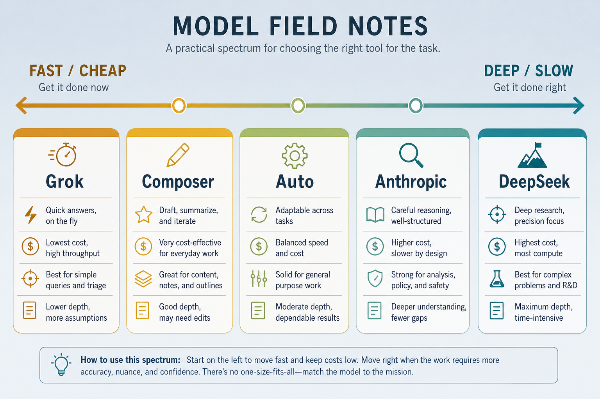

Model field notes · engines
Model ≠ harness. Engines vs cars — swap engines carefully; don’t blame the engine for a missing steering wheel.
Harness shapes workflow — model shapes quality
Reasoning
Which brain fits greenfield vs debug vs vision?
Latency
TPS and token efficiency change the feel of the loop.
Budget
Personal field notes via OpenRouter + Cursor — not eternal benchmarks.
Starting map: greenfield vs debug, image needs, and budget change the winner.
Model comparison
| Model / mode | Strong | Weak / cost |
|---|---|---|
| Grok 4.5 | fast, smooth, high quality; moderate spend | not top on every bench; more hallucination on unverifiable tasks |
| Composer 2.5 Fast | very fast, good replies | costs more than Auto |
| Cursor Auto | fast feedback loop | quality varies with routing |
| Opus / Sonnet / Fable | clarifying context & skills; reliable interaction | slow; session limits |
| DeepSeek V4 | strong debug / fix on existing code | no images; weaker on greenfield |
| Qwen 3 | simple tasks | weak on complex following / large projects |
| Kimi / GLM | good code | expensive |
Model spectrum

Fast / cheap ↔ deep / slow — pick by task, not by brand loyalty.
Illustration

Pick the engine for the job; don’t blame the engine for a missing steering wheel.
Why Grok 4.5 impresses
~80 TPS
Optimized for coding + agentic work (xAI / mid-2026 context).
~4.2× fewer
Fewer output tokens than Opus 4.8 on SWE-Bench Pro → cheaper per task.
Intel / time / $
Main edge = intelligence per unit time and cost on verifiable tasks.
Snapshot pricing: ~$2 in / $6 out per 1M · trained with Cursor · often beats Auto as default.
Task-fit principles
New project, thin codebase
Favor strong reasoning (Anthropic, Grok) over DeepSeek / Qwen.
Fix existing code
DeepSeek V4 is effective and cheap for local reasoning + iteration.
Needs images
Screenshots / diagrams — avoid DeepSeek (no image input).
Constraints & skills
Anthropic strongest at asking back and skill design.
When you want speed + low cost
Grok 4.5
Fast, smooth, moderate spend — strong everyday default.
Composer Fast
Very fast replies when you need snappy iteration.
Prices move
OpenRouter / vendors change — treat $ numbers as snapshots.
Worked example · three tasks
Scaffold a docs site
Greenfield + structure → Grok or Anthropic.
Failing pytest, big repo
Local fix loop → DeepSeek V4 or Grok.
Broken UI screenshot
Needs vision → not DeepSeek; pick a vision-capable model.
One model for every job wastes money or quality.
Easy to go wrong
One model forever
Waste money or quality — match task fit.
Marketing TPS
Fast wrong answers still waste time — check task fit.
Ignore image capability
Vision tasks silently degrade on text-only models.
Auto = a model
Routing mode ≠ a single model’s skill.
Keep the map fresh
OpenRouter
Models & prices move — re-check before budgeting a project.
LMArena
Human preference ranks — useful signal, not gospel for your task.
These are personal field notes — update when the wave moves.
Don’t confuse engine and car
agents
Compare kitchens — Cursor, Claude Code, Pi…
mcp
How tools attach to any brain.
skills-rules
Global know-how the harness loads.
How to pick today
Then pick the harness that can actually call the tools you need.
Match the engine
to the job.
notes/08-model-notes.md — table, principles, Grok spotlight.
Open note →